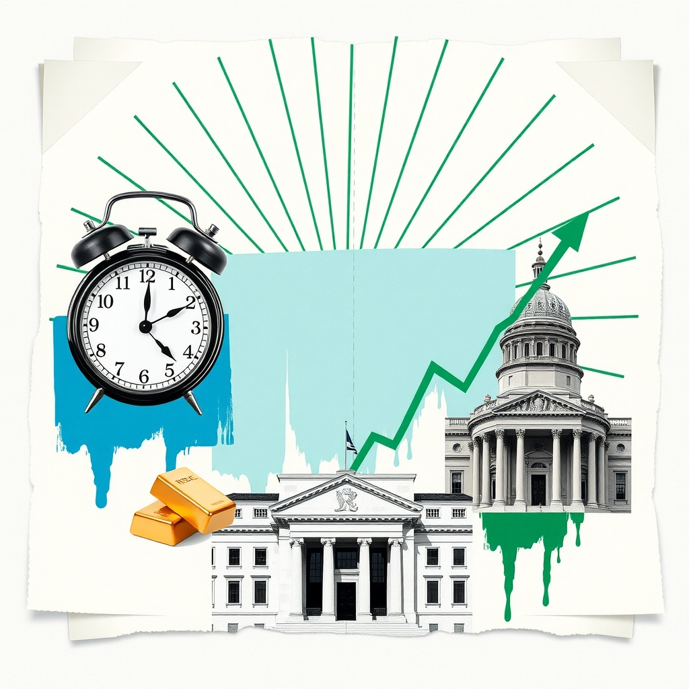

FOMC Meeting Minutes Await Gold Tradersកំណត់ហេតុប្រជុំ FOMC សម្រាប់អ្នកជួញដូរមាស

High-impact US economic data is scheduled in the coming hours. Stay prepared for potential market volatility.
ព្រឹត្តិការណ៍សេដ្ឋកិច្ចអាមេរិកដែលមានឥទ្ធិពលខ្លាំងនឹងមកដល់ក្នុងពេលប៉ុន្មានម៉ោងខាងមុខនេះ។ សូមប្រុងប្រយ័ត្នចំពោះការប្រែប្រួលទីផ្សារ។
High-impact US events coming up (Phnom Penh time):
ព្រឹត្តិការណ៍សេដ្ឋកិច្ចអាមេរិកសំខាន់ៗដែលនឹងមកដល់ (ម៉ោងភ្នំពេញ)៖
Thu 01:00 (Phnom Penh) — FOMC Meeting Minutes · Forecast: n/a · Previous: n/a
Thu 01:00 (Phnom Penh) — FOMC Meeting Minutes · Forecast: n/a · Previous: n/a
As we look ahead to the coming hours, XAU/USD traders are preparing for the release of the FOMC Meeting Minutes scheduled for Thursday at 01:00 Phnom Penh time. Central bank communications of this magnitude frequently drive shifts in US dollar valuations, real yields, and broader interest rate expectations. Because gold is denominated in USD and yields no interest, any shifts in the outlook for monetary policy can directly impact the precious metal.
អ្នកជួញដូរ XAU/USD កំពុងត្រៀមខ្លួនសម្រាប់ការប្រកាសកំណត់ហេតុប្រជុំ FOMC ដែលគ្រោងនឹងធ្វើឡើងនៅថ្ងៃសុក្រ វេលាម៉ោង 01:00 នាទីព្រឹក ម៉ោងនៅភ្នំពេញ។ ការប្រាស្រ័យទាក់ទងរបស់ធនាគារកណ្តាលកម្រិតនេះ ជំរុញការផ្លាស់ប្តូរតម្លៃដុល្លារអាមេរិក អត្រាផលចំណូលពិត និងការរំពឹងទុកអត្រាការប្រាក់។ ដោយសារមាសត្រូវបានកំណត់តម្លៃជា USD និងមិនផ្តល់ការប្រាក់ ការផ្លាស់ប្តូរណាមួយនៅក្នុងទស្សនវិស័យគោលនយោបាយរូបិយវត្ថុអាចប៉ះពាល់ដល់លោហៈមានតម្លៃនេះដោយផ្ទាល់។
Understanding the balance of risks around these events is essential for market participants. A result stronger than forecast typically supports the dollar and yields, which can pressure gold. Conversely, a weaker outcome usually does the opposite by weighing on the currency and supporting XAU/USD. As always, traders should exercise caution as volatility and spreads can widen significantly around major economic releases.
ការយល់ដឹងអំពីតុល្យភាពហានិភ័យជុំវិញព្រឹត្តិការណ៍ទាំងនេះគឺមានសារៈសំខាន់ណាស់សម្រាប់អ្នកជួញដូរនៅលើទីផ្សារ។ លទ្ធផលដែលខ្លាំងជាងការរំពឹងទុកជាទូទៅគាំទ្រដល់ដុល្លារអាមេរិក និងអត្រាផលចំណូល ដែលអាចដាក់សម្ពាធលើមាស។ ផ្ទុយទៅវិញ លទ្ធផលខ្សោយជាងធម្មតាតែងតែផ្តល់ផលផ្ទុយគ្នាដោយទម្លាក់តម្លៃប្រាក់រូបី និងគាំទ្រដល់ XAU/USD ។ ដូចរាល់ដង អ្នកជួញដូរគួរតែមានការប្រុងប្រយ័ត្នព្រោះភាពប្រែប្រួល និង spread អាចរីករាលដាលយ៉ាងខ្លាំងជុំវិញការចេញផ្សាយទិន្នន័យសេដ្ឋកិច្ចសំខាន់ៗ។
Key takeawaysចំណុចសំខាន់ៗ
- FOMC Meeting Minutes release is scheduled for Thursday at 01:00 Phnom Penh time.
- ការប្រកាសកំណត់ហេតុប្រជុំ FOMC គ្រោងនឹងធ្វើឡើងនៅថ្ងៃព្រហស្បតិ៍ ម៉ោង 01:00 នាទី ម៉ោងនៅភ្នំពេញ។
- Data releases directly influence the USD, real yields, and Fed rate expectations.
- ការចេញផ្សាយទិន្នន័យមានឥទ្ធិពលផ្ទាល់ទៅលើ USD អត្រាផលចំណូល និងការរំពឹងទុកអត្រាការប្រាក់របស់ Fed។
- Expect wider spreads and increased volatility around the time of the release.
- សូមរំពឹងទុកថា spread និងភាពប្រែប្រួលនឹងរីករាលដាលកាន់តែខ្លាំងជុំវិញពេលនៃការចេញផ្សាយ។
Original commentary by THE MARKET CODE, based on public reporting from Economic calendar (Forex Factory feed). Written with the help of AI. Educational only, not financial advice.
មតិវិភាគដើមដោយ THE MARKET CODE ផ្អែកលើការរាយការណ៍សាធារណៈពី Economic calendar (Forex Factory feed)។ សរសេរដោយមានជំនួយពី AI។ មាតិកាអប់រំប៉ុណ្ណោះ មិនមែនជាដំបូន្មានហិរញ្ញវត្ថុទេ។